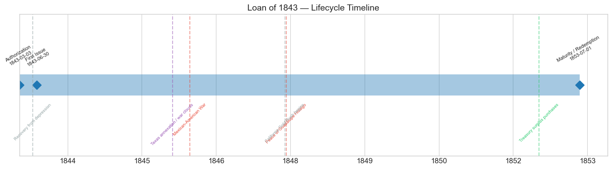
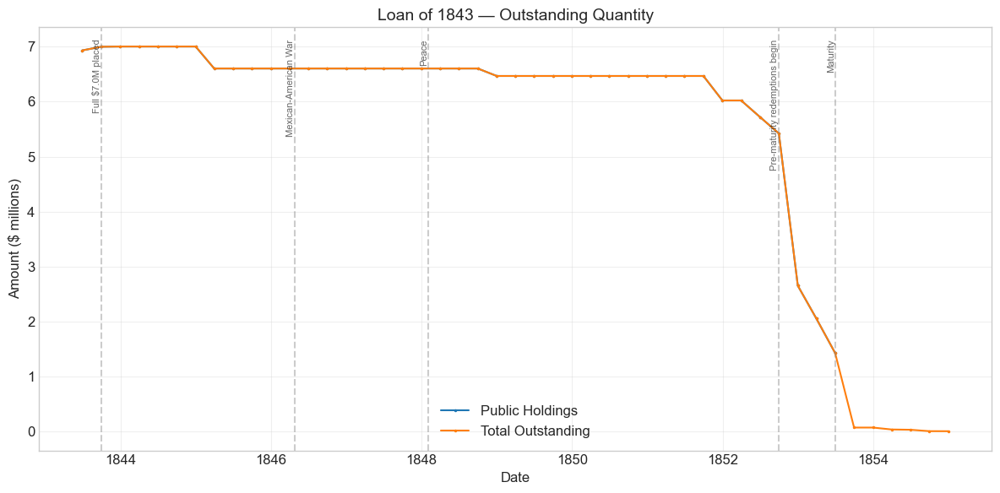
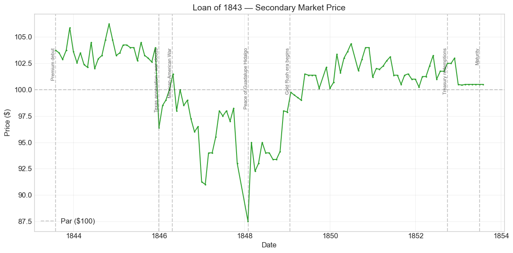
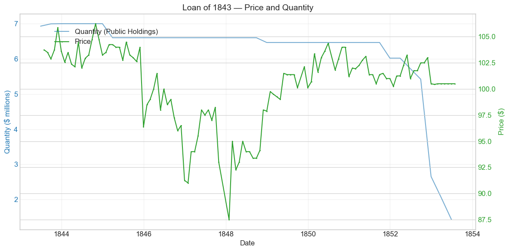
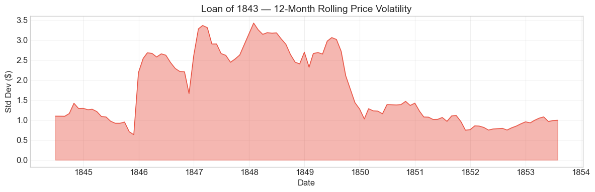

Bond Biography: Loan of 1843#
The Bond That Confirmed the Recovery#
An enhanced chapter from the Hall-Payne-Sargent US Federal Bond Database (2,857 issues, 1776–1960)
Bond ID (L1): 20084 | Category: Interest Bearing > Marketable > Long Term Bond
import pandas as pd
import numpy as np
import matplotlib.pyplot as plt
import matplotlib.patches as mpatches
import datetime
import warnings
warnings.filterwarnings('ignore')
plt.style.use('seaborn-v0_8-whitegrid')
plt.rcParams.update({'figure.figsize': (12, 6), 'font.size': 12,
'axes.titlesize': 14, 'axes.labelsize': 12})
# Load the bond database
store = pd.HDFStore('../data/BondDF.h5', mode='r')
BondList = store['BondList']
BondQuant = store['BondQuant']
BondPrice = store['BondPrice']
store.close()
BondQuant_T = BondQuant.transpose()
BondPrice_T = BondPrice.transpose()
bond_id = 20084
print(f'Loaded data for: Loan of 1843 (ID: 20084)')
/Users/thomassargent/anaconda3/lib/python3.9/site-packages/pandas/core/arrays/masked.py:60: UserWarning: Pandas requires version '1.3.6' or newer of 'bottleneck' (version '1.3.5' currently installed).
from pandas.core import (
Loaded data for: Loan of 1843 (ID: 20084)
Overview#
The Loan of 1843 was authorized by the Act of March 3, 1843, and first issued on June 30, 1843. It was a ten-year stock carrying a 5.0% coupon, payable semi-annually in coin — and it sold above par, at a price recorded in the database as 1.01. During its life on the secondary market the bond’s average price was $100.36, ranging from $87.50 to $106.25 (117 monthly observations from July 1843 to July 1853). Peak outstanding reached $7.00 million at the end of 1843.
Every one of those numbers is an answer to the numbers of the year before. In 1842, as the previous chapter recounts, the United States — a government that had never missed a payment on its own debt — had been forced to sell twenty-year 6 per cent coin bonds at a discount of 97½, after the great European houses, disgusted by the defaults and repudiations of eight American states, refused to touch federal paper at any price. Barely a year later the same Treasury, under the same much-abused Tyler administration, offered a new loan carrying a coupon a full point lower — 5 per cent instead of 6 — and the market took it at a premium. The Act of March 3, 1843 was passed on the last day of the expiring Twenty-Seventh Congress, principally to fund and retire the mass of short-dated Treasury notes with which the Treasury had bridged the deficits of 1837–43; the loan it produced, $7,004,231.35 of ten-year fives, was placed with none of the agony that had attended the 1842 issue.
The pairing of the two loans is the point of this chapter. The Loan of 1842 marks the bottom of federal credit between Hamilton’s funding and the Civil War; the Loan of 1843, floated twelve months later on terms more than a percentage point cheaper, marks the recovery — arguably the fastest rehabilitation of a sovereign borrower’s terms in the antebellum record. The forces that turned the market are visible in the fiscal data: the Tariff of August 1842 restored customs revenue, the depression that had bottomed out in 1842–43 gave way to reviving trade, and capital that had been burned by state bonds crowded into the one American public credit that had never failed. Where the 1842 chapter owns the story of the collapse, this one owns the story of the recovery: a premium sale, a premium life interrupted only by the Mexican War (when a flood of new government 6s made a 5 per cent coupon look stingy), and a punctual, unceremonious redemption at maturity in 1853, paid off out of the gold-swollen surpluses of the early 1850s.
Historical Context#
The following major events occurred during this bond’s lifetime (mid-1843 to mid-1853):
Date |
Event |
Category |
|---|---|---|
1837-05-10 to 1843 |
Panic of 1837 and ensuing depression (ending as the bond was born) |
Crisis |
1842-08-30 |
Tariff of 1842 restores customs revenue |
Legislation |
1845-03/12 |
Annexation of Texas; war clouds gather |
Other |
1846-04-25 to 1848-02-02 |
Mexican-American War |
War |
1846-07-30 |
Walker Tariff; Independent Treasury re-established |
Legislation |
1847-10 |
British commercial crisis (London panic of October 1847) |
Crisis |
1848-01-24 |
California gold discovered; Gold Rush from 1848–49 |
Other |
1850-09 |
Compromise of 1850 |
Legislation |
1853-07-01 |
Bond reaches its ten-year maturity; redemption |
Other |
The auto-generated event list for this bond also includes the Panic of 1857 and the Civil War, but those belong to other chapters: this bond was dead and buried — fully redeemed — years before either arrived. Its decade, 1843–1853, runs instead from the trough of one depression to the crest of the great gold-fueled boom that preceded the next one.
The fiscal turn of 1843#
The depression that followed the Panics of 1837 and 1839 bottomed out in 1842–43. The federal government had run deficits every year from 1837 through 1843, covering them with successive issues of short-term Treasury notes and then the funded Loans of 1841 and 1842. By early 1843 the corner was turning: the Tariff of August 1842 had rebuilt the customs revenue, imports were recovering with trade generally, and the fiscal year 1844 would show the first comfortable surplus in seven years. The Act of March 3, 1843 was framed for this turning point — not to finance new spending but to consolidate the emergency paper of the crisis years, funding outstanding Treasury notes into a single ten-year stock. The database records $6.93 million issued by June 30, 1843 and the full $7.00 million by September — placement measured in months, where the 1842 loan’s had dragged across the better part of a year.
The Mexican-American War (1846–1848)#
The war was the one serious interruption of the bond’s premium life. It hurt the price through two channels. The first was generic war uncertainty and the prospect of heavy borrowing, which began pressing on quotations from late 1845, as Texas annexation soured relations with Mexico (and, over Oregon, with Britain). The second was mechanical and specific to this bond: to pay for the war the Treasury issued tens of millions in new 6 per cent loans and notes (the Loans of 1846, 1847, and 1848) at or near par. When an investor could buy a fresh government 6 at par, a 5 per cent coupon could compete only at a discount. The Loan of 1843 accordingly slid from 104 in late 1845 to the low 90s in 1846–47 and touched its lifetime low of $87.50 in January 1848 — a deeper price discount than the 6s of 1842 ever suffered in those years, though the difference reflects coupon arithmetic, not doubts about this particular promise. Peace at Guadalupe Hidalgo (February 2, 1848) marked the bottom; the price snapped back 8.6% that month.
Gold, surpluses, and redemption (1849–1853)#
After the war the bond climbed back through par in 1849 and spent its final four years quietly above 100. California gold, booming trade, and the Walker Tariff’s buoyant revenues gave the Treasury persistent surpluses, which Secretaries Corwin and Guthrie applied to debt reduction — buying government bonds in the open market at premiums and, for this loan, redeeming principal outright as its July 1, 1853 maturity approached. The quantity series shows the wind-down concentrated in late 1852 and the first half of 1853; the price, meanwhile, converged serenely on par-plus-accrued, flat-lining at 100½ through its final months. The Panics of 1837 (which shaped its birth) and 1857 (which it never saw) bracket its decade without touching it: the Loan of 1843 lived and died entirely inside the recovery.
# Bond Lifecycle Timeline
fig, ax = plt.subplots(figsize=(14, 4))
# Key dates
dates = [('Authorization', '1843-03-03'), ('First Issue', '1843-06-30'), ('Maturity / Redemption', '1853-07-01')]
events = [('Recovery from depression', '1843-06-01', 'other'), ('Texas annexation / war clouds', '1845-12-29', 'crisis'), ('Mexican-American War', '1846-04-25', 'war'), ('Peace of Guadalupe Hidalgo', '1848-02-02', 'war'), ('California Gold Rush begins', '1848-01-24', 'other'), ('Treasury surplus purchases', '1852-10-01', 'legislation')]
import matplotlib.dates as mdates
from datetime import datetime
# Plot bond lifetime bar
d0 = datetime.strptime(dates[0][1], '%Y-%m-%d')
d1 = datetime.strptime(dates[-1][1], '%Y-%m-%d')
ax.barh(0, (d1 - d0).days, left=mdates.date2num(d0), height=0.3,
color='#1f77b4', alpha=0.4, label='Bond Lifetime')
# Mark key dates
for label, date_str in dates:
d = datetime.strptime(date_str, '%Y-%m-%d')
ax.plot(mdates.date2num(d), 0, 'D', color='#1f77b4', markersize=10)
ax.annotate(f'{label}\n{date_str}', (mdates.date2num(d), 0.25),
ha='center', va='bottom', fontsize=8, rotation=30)
# Mark historical events
colors = {'war': '#e74c3c', 'crisis': '#9b59b6', 'legislation': '#2ecc71', 'other': '#95a5a6', 'monetary': '#f39c12'}
for name, date_str, cat in events:
d = datetime.strptime(date_str, '%Y-%m-%d')
ax.axvline(mdates.date2num(d), color=colors.get(cat, 'gray'), alpha=0.5, linestyle='--')
ax.annotate(name, (mdates.date2num(d), -0.25), ha='center', va='top',
fontsize=7, rotation=45, color=colors.get(cat, 'gray'))
ax.set_yticks([])
ax.xaxis.set_major_formatter(mdates.DateFormatter('%Y'))
ax.set_title('Loan of 1843 — Lifecycle Timeline')
ax.set_ylim(-1, 1)
plt.tight_layout()
plt.show()

Bond Features#
Feature |
Detail |
|---|---|
Name |
Loan of 1843 |
Authorizing Act |
March 3, 1843 |
First Issue Date |
June 30, 1843 |
Term |
10 years (redeemable from July 1, 1853) |
Coupon Rate |
5.0% |
Payment Frequency |
Semi-annual |
Callable |
No |
Payable in Coin |
Yes |
Amount Placed |
$7,004,231.35 (peak outstanding, December 1843) |
Price Sold |
1.01 (about 101 per $100 of face value) |
Every term in this table should be read against the corresponding line of the Loan of 1842, floated one year earlier by the same Treasury:
Loan of 1842 |
Loan of 1843 |
|
|---|---|---|
Coupon |
6% |
5% |
Term |
20 years |
10 years |
Price sold |
97½ (discount) |
~101 (premium) |
Time to place |
~9 months, in fragments |
months, without difficulty |
The lower coupon at a higher price is the headline: the government’s borrowing cost fell by well over a percentage point in about a year. The shorter term matters too. The 1842 act’s twenty-year maturity had conceded that the deficit was a generational burden; the 1843 act’s ten-year term, adopted for a loan whose main purpose was to fund the floating debt of Treasury notes, expressed a Treasury that expected — correctly, as it turned out — to be able to pay the money back within a decade. And the premium sale reversed the most humiliating single datum of 1842: the discount on a peacetime coin bond of the United States. The database’s price-sold figure of 1.01 records the market’s verdict that the emergency was over.
# Display full bond features from database
row = BondList.loc[20084]
display_cols = [
"Treasury's Name Of Issue", 'Authorizing Act', 'Term Of Loan',
'First Issue Date', 'First Redemption Date', 'Final Redemption Date',
'Coupon Rate', 'Coupons Per Year', 'Callable', 'Coin',
'Authorized Amount', 'Price Sold'
]
print('Bond Features from Database:')
print('=' * 55)
for col in display_cols:
if col in row.index:
print(f' {col:<30} {row[col]}')
Bond Features from Database:
=======================================================
Treasury's Name Of Issue Loan of 1843
Authorizing Act March 3, 1843
Term Of Loan 10 years
First Issue Date 1843-06-30 00:00:00
First Redemption Date NaT
Final Redemption Date NaT
Coupon Rate 5.0
Coupons Per Year 2.0
Callable 0.0
Coin 1.0
Authorized Amount nan
Price Sold 1.01
Bond Quantity Over Time#
The bond’s outstanding quantity peaked at $7.00 million at the end of 1843 and was wound down to zero by mid-1853, with only small matured-but-unpresented residuals lingering into 1854. The quarterly series below spans June 30, 1843 to the final redemption.
# Bond quantity over time
fig, ax = plt.subplots(figsize=(12, 6))
for stype in ['Public Holdings', 'Total Outstanding']:
try:
s = BondQuant_T.loc[(20084, stype)]
s = s[s.notna()]
if len(s) > 0:
ax.plot(s.index, s.values / 1e6, marker='.', markersize=3, linewidth=1.5, label=stype)
except KeyError:
pass
ax.set_title('Loan of 1843 — Outstanding Quantity')
ax.set_xlabel('Date')
ax.set_ylabel('Amount ($ millions)')
ax.legend()
ax.grid(True, alpha=0.3)
events = {'1843-09-30': 'Full $7.0M placed', '1846-04-25': 'Mexican-American War', '1848-02-02': 'Peace', '1852-10-01': 'Pre-maturity redemptions begin', '1853-07-01': 'Maturity'}
for date_str, label in events.items():
d = pd.Timestamp(date_str)
ax.axvline(d, color='gray', alpha=0.4, linestyle='--')
ax.text(d, ax.get_ylim()[1]*0.97, label, rotation=90, va='top', ha='right', fontsize=8, alpha=0.7)
plt.tight_layout()
plt.show()

Quantity Analysis#
The quantity series is the mirror image of the 1842 loan’s, and the contrast is the story.
Rapid placement (1843). Where the Loan of 1842 crawled out in fragments over nearly a year — $1.6 million by June 1842, the full amount only by March 1843 — the Loan of 1843 was essentially fully placed at once: $6.93 million outstanding at the very first observation (June 30, 1843) and the complete $7,004,231.35 by the end of the year. Much of this speed reflects the loan’s design — funding and exchanging outstanding Treasury notes into stock, alongside cash subscriptions taken at a premium — but the willingness of holders to convert short paper into a ten-year claim on the same Treasury was itself a vote of restored confidence.
A long, nearly flat decade (1844–1851). The balance then sat almost untouched. Three modest early reductions are visible — about $0.4 million in the first quarter of 1845, $0.14 million at the end of 1848, and $0.45 million at the end of 1851 — consistent with occasional Treasury purchases or redemptions when cash allowed; the database does not identify counterparties, and we do not press the point. Notably, the Mexican War left the series untouched: the Treasury of 1846–48 was adding new debt, not retiring old, and this bond simply rode out the war at full size.
The wind-down (1852–1853). The real reduction is concentrated in the loan’s final year, as surplus revenue met approaching maturity. The balance stepped down from $6.02 million to $5.42 million over mid-1852, then dropped by half — to $2.65 million — in the December 1852 quarter, and fell to $2.05 million by March and $1.43 million by June 1853. This is the same surplus-driven debt reduction described in the 1842 chapter — the Treasury under Secretaries Corwin and then Guthrie returning gold-rush-era surpluses to the market by retiring debt — but with a difference: because this loan’s maturity arrived on July 1, 1853, the Treasury could pay much of it off at par-plus-accrued rather than at the double-digit premiums it was conceding on the longer 1842 and Mexican War sixes. A maturing bond is the cheapest bond to retire, and the ledger shows the Treasury taking full advantage.
The residual tail (1853–1854). After maturity, a small “Matured Outstanding” balance — $67,800 in late 1853, dwindling to $1,500 by the end of 1854 — represents certificates not yet presented for payment, the usual tail in nineteenth-century loan accounts and in no sense a default. The Loan of 1843 was, from first issue to final redemption, paid exactly as promised.
Secondary Market Prices#
Overall Statistics (1843-07-31 to 1853-07-31): Mean $100.36, Range $87.50–$106.25, Std Dev $3.61, 117 observations.
By Period:
Period |
Approx. Range |
Character |
|---|---|---|
1843–1845 (to Nov.) |
102–106¼ |
Premium birth and premium life; recovery in full swing |
Dec. 1845–1848 (Mexican War) |
87½–101½, trough Jan. 1848 |
War uncertainty plus competition from new 6% war loans |
1848–1849 |
92–100 |
Postwar recovery back toward par |
1850–1852 |
100¼–104⅜ |
Gold-era premium; quiet, well-supported market |
1853 |
flat at ~100½ |
Convergence to par as the July 1853 maturity approached |
The series opens in July 1843 at 103¾ — a new 5 per cent loan of the United States commanding a near-four-point premium, twelve months after the same government’s 6s had gone begging at 97½. The lifetime peak of 106¼ came in October 1844, at which price the bond yielded roughly 4¼ per cent to its 1853 maturity: European-consol territory, for a borrower that a Rothschild had reportedly pronounced unable to borrow a dollar two years before. The wartime slide to 87½ looks alarming on the chart but should be read through the coupon: with the Treasury selling unlimited new 6s at par, any 5 per cent bond had to price at a discount for its yield to compete, and at 87½ in January 1848 this bond’s yield to maturity was in the high 7s — panicky, but of the same order as the pressure on the whole government list at the war-finance trough. The final stretch is a textbook illustration of pull-to-par: from 1852 the price shed its premium point by point, and the last seven observations sit motionless at 100½ — by then less a market price than the arithmetic of a bond about to be paid off at 100 plus accrued interest.
# Annotated price chart
fig, ax = plt.subplots(figsize=(12, 6))
s = BondPrice_T.loc[(20084, 'Average')]
s = pd.to_numeric(s, errors='coerce').dropna()
if len(s) > 0:
ax.plot(s.index, s.values, marker='.', markersize=3, linewidth=1.5, color='#2ca02c')
ax.axhline(100, color='black', alpha=0.2, linestyle='--', label='Par ($100)')
ax.set_title('Loan of 1843 — Secondary Market Price')
ax.set_xlabel('Date')
ax.set_ylabel('Price ($)')
ax.legend()
ax.grid(True, alpha=0.3)
events = {'1843-07-31': 'Premium debut', '1845-12-29': 'Texas annexation / war clouds', '1846-04-25': 'Mexican-American War', '1848-02-02': 'Peace of Guadalupe Hidalgo', '1849-01-24': 'Gold Rush era begins', '1852-10-01': 'Treasury redemptions', '1853-07-01': 'Maturity'}
for date_str, label in events.items():
d = pd.Timestamp(date_str)
ax.axvline(d, color='gray', alpha=0.4, linestyle='--')
ax.text(d, ax.get_ylim()[1]*0.97, label, rotation=90, va='top', ha='right', fontsize=8, alpha=0.7)
plt.tight_layout()
plt.show()

# Price and Quantity — dual-axis chart
fig, ax1 = plt.subplots(figsize=(12, 6))
# Quantity (left axis)
for stype in ['Public Holdings', 'Total Outstanding']:
try:
q = BondQuant_T.loc[(20084, stype)]
q = q[q.notna()]
if len(q) > 0:
ax1.plot(q.index, q.values / 1e6, color='#1f77b4', alpha=0.6, label=f'Quantity ({stype})')
break
except KeyError:
pass
ax1.set_xlabel('Date')
ax1.set_ylabel('Quantity ($ millions)', color='#1f77b4')
ax1.tick_params(axis='y', labelcolor='#1f77b4')
# Price (right axis)
ax2 = ax1.twinx()
p = BondPrice_T.loc[(20084, 'Average')]
p = pd.to_numeric(p, errors='coerce').dropna()
if len(p) > 0:
ax2.plot(p.index, p.values, color='#2ca02c', marker='.', markersize=2, label='Price')
ax2.set_ylabel('Price ($)', color='#2ca02c')
ax2.tick_params(axis='y', labelcolor='#2ca02c')
ax1.set_title('Loan of 1843 — Price and Quantity')
ax1.grid(True, alpha=0.3)
fig.legend(loc='upper left', bbox_to_anchor=(0.1, 0.9))
plt.tight_layout()
plt.show()

Detected Price/Quantity Events#
The following significant movements were auto-detected in the data, with causal interpretation:
Date |
Type |
Change |
Interpretation |
|---|---|---|---|
1845-12 |
price drop |
-7.3% |
War clouds. Texas was formally annexed at the end of 1845 while relations with Mexico collapsed and the Oregon dispute with Britain simmered; the market began pricing the borrowing a war would require. The 6s of 1842 fell the same month. |
1846-12 |
price drop |
-5.4% |
War finance arrives. With the war six months old, the Treasury was bringing the new $10 million 6% Loan of 1846 and fresh Treasury notes to market; a 5% coupon had to cheapen to compete with par 6s, and money tightened generally. |
1847-10 |
price drop |
-5.3% |
The autumn 1847 money squeeze. Heavy war-loan supply coincided with the British commercial crisis of October 1847, which tightened credit on both sides of the Atlantic. The auto-detector’s nearest tag (“Gold Rush”) is a coincidence of dates — gold was not discovered until January 1848, and the news had reached no market yet. |
1848-01 |
price drop |
-5.9% |
The war-finance trough. The Treasury was preparing the last and largest war loan (the $16 million 6s of 1848) while peace remained unsigned; the bond touched its lifetime low of 87½. |
1848-02 |
price spike |
+8.6% |
Peace. The Treaty of Guadalupe Hidalgo (February 2, 1848) ended the war; the January quote proved the bottom, and the whole government list rallied. |
1852-12 |
quantity decrease |
-51.1% |
Not a market event but a Treasury one: with the July 1853 maturity months away and revenue running far ahead of spending, the Treasury redeemed roughly half the remaining principal. The auto-detector found “none identified” because the cause sat in the Treasury’s own ledger, not in the newspapers. |
1853-03 |
quantity decrease |
-22.6% |
Continued pre-maturity redemption out of surplus revenue, in the transition from Secretary Corwin to Secretary Guthrie. |
1853-06 |
quantity decrease |
-30.5% |
Final redemptions as the bond reached maturity on July 1, 1853; only matured, unpresented certificates remained thereafter. |
Two cautions. First, occasional single-month wobbles in 1846–48 (and the odd missing month in 1849–50) reflect a market in which this bond traded alongside — and less actively than — the big new war 6s; not every jiggle deserves a headline. Second, the perfectly flat 100½ of the final seven months is the price of a bond in administrative wind-down, quoted nominally while holders waited to be paid; it should not be read as market information.
Price Volatility#
Maximum drawdown: -17.6% (from the peak of $106.25 on October 31, 1844 to the trough of $87.50 on January 31, 1848)
Average monthly return: -0.009%
The entire drawdown belongs to the Mexican War, and it unwound almost as fast as it formed: within eighteen months of the peace the bond was back above par, and it never left premium territory again. The volatility chart below accordingly shows a single hump — rising from the placid mid-1840s into the war years, peaking around the 1846–48 financing squeeze, and then decaying through the gold-era calm to almost nothing as the price pinned itself to par ahead of redemption. Compare the two neighboring biographies: the Loan of 1842’s worst moment came at the end of its life (the secession winter of 1861), and the Louisiana 6s of 1804 drew down 27.9% in wartime; the Loan of 1843’s crisis came in mid-life, was strictly a matter of relative coupon and war-loan supply, and at no point put the promise itself in question. A slightly negative average monthly price return over the whole life is exactly what one expects of a bond issued at a premium and redeemed at par: the coupon, not capital gain, was the investor’s reward.
# Rolling volatility (12-month window)
p = BondPrice_T.loc[(20084, 'Average')]
p = pd.to_numeric(p, errors='coerce').dropna()
if len(p) >= 12:
rolling_std = p.rolling(window=12).std().dropna()
fig, ax = plt.subplots(figsize=(12, 4))
ax.fill_between(rolling_std.index, rolling_std.values, alpha=0.4, color='#e74c3c')
ax.plot(rolling_std.index, rolling_std.values, color='#e74c3c', linewidth=1)
ax.set_title('Loan of 1843 — 12-Month Rolling Price Volatility')
ax.set_xlabel('Date')
ax.set_ylabel('Std Dev ($)')
ax.grid(True, alpha=0.3)
plt.tight_layout()
plt.show()
else:
print('Insufficient data for rolling volatility (need >= 12 observations)')

Issuance, Distribution, and Redemption#
The bond was originally sold at about 101 (recorded in the database as 1.01 per $1 of face value).
How it was sold. The Act of March 3, 1843 — passed on the final day of the Twenty-Seventh Congress — authorized the Treasury to fund the outstanding short-term Treasury notes of the crisis years into a ten-year 5 per cent stock, and to sell stock for cash for the same purpose. There was, as with the 1842 loan, no Baring–Hope-style foreign syndicate: the placement was domestic, through Treasury advertisement and subscription, absorbed by American banks, insurance companies, trustees, and private capitalists, together with holders of Treasury notes who converted their short paper into the new stock. The contrast with 1842 lay not in the machinery but in the reception. Bids came in above par — the database records the average price realized as 1.01 — and the loan was substantially placed within months of the act: $6.93 million by the end of June 1843, the full $7,004,231.35 by the year’s end. Whether any European money crept back into the subscription lists is not recorded in the database and we do not claim it; what is certain is that the domestic market, which a year earlier had taken federal 6s only at a discount, now paid a premium for federal 5s.
How it lived. The stock settled into the portfolios of the same premium-investment clientele that held the 1842 sixes — institutions and trustees prizing semi-annual coin interest — and traded on the New York list continuously for a decade, with the Mexican War interlude described above. Its coupon made it the cheaper, shorter, junior sibling of the sixes: less spectacular in the great premium run of the early 1850s, but also the first to be paid off.
How it ended. The end was orderly to the point of anticlimax — which was precisely its significance. As the July 1, 1853 maturity approached, the surplus-rich Treasury retired the loan in stages: roughly half the remaining principal in the closing months of 1852, further large redemptions in the spring of 1853, and payment of the balance at maturity. Unlike the 1842 sixes, which the Treasury was then buying back at premiums above 116, the maturing fives could be redeemed at par plus accrued interest — the cheapest debt reduction available, and the ledger shows the Treasury taking it. A residual of matured, unpresented certificates ($67,800 in late 1853, $1,500 by the end of 1854) trailed off in the accounts, as such residuals always did. Ten years after a Congress had debated whether the United States could borrow at all, the loan born of that recovery was repaid early, in gold, out of surplus — and nobody thought it remarkable.
Implications and Legacy#
The Loan of 1843 is the smallest kind of bond — $7 million, ten years, no drama at either end — and that is exactly why it matters. It is the proof of the recovery whose crisis the Loan of 1842 records.
It closed the fastest credit rehabilitation in the antebellum record. Between June 1842 and mid-1843 — roughly one year — the terms on which the United States could borrow moved from 6 per cent at 97½ to 5 per cent at 101: a fall of well over a percentage point in the government’s cost of funds, achieved without a default cured, a debt restructured, or a foreign banker won over, but simply by the return of revenue (the Tariff of 1842), the passing of the depression, and the market’s dawning recognition that federal credit had never actually failed. No other adjacent pair of issues in the antebellum database registers so large an improvement so quickly. When the Mexican War forced heavy borrowing only three years later, the Treasury could sell tens of millions of 6s at and above par — a capacity that the 1843 loan’s reception had first demonstrated and that the war loans’ own chapters chronicle.
It re-established the 5 per cent benchmark. A 5 per cent coupon sold at a premium put peacetime United States credit back where it had stood in the best years before 1837 — and where, after the war interlude, the 5s of the Texas Indemnity (1850) and the Loan of 1858 would try to keep it. The 1843 fives were the first postwar-of-1812-era proof that the federal government could fund itself below 6 in a hostile decade.
It rehearsed the surplus-redemption machinery of the 1850s. The pre-maturity redemptions of 1852–53 were of a piece with the open-market premium purchases that Secretaries Corwin and Guthrie applied to the 1842 and Mexican War sixes: the gold-era Treasury’s policy of returning surplus revenue to the money market by retiring debt. This bond, with a maturity conveniently at hand, was the cheap end of that program — and its clean payoff in 1853 reduced the funded debt at par while the longer sixes could only be coaxed in at 116 and above. The episode is an early, concrete lesson in the option value of maturity structure.
It completed an argument about federal versus state credit. The 1841–42 state defaults had taught European investors, expensively, that “American credit” was not one thing. The federal government’s side of that lesson was delivered in two installments: the 1842 loan showed it would borrow at punishing terms rather than miss a payment, and the 1843 loan showed how quickly the market rewarded the distinction. Repudiating states stayed locked out of capital markets for decades; the United States was back to premium 5s within a year. That divergence, sharpened here, underwrote the Union’s borrowing power in 1861–65.
And it supplied the quiet second line of a famous story. If the Loan of 1842 is remembered for the verdict attributed to Baron Rothschild — that the United States “cannot borrow a dollar” — the Loan of 1843 is the rejoinder, delivered not in words but in a subscription list: five per cent, at a premium, oversubscribed at home, repaid in gold a decade later to the day. Few obituaries have been refuted faster.
References#
Primary and Documentary Sources#
U.S. Congress, Act of March 3, 1843 (5 Stat. 614) — authorizing the funding of outstanding Treasury notes and the loan of 1843.
Annual Reports of the Secretary of the Treasury, 1842–1854 (Forward, Spencer, Bibb, Walker, Meredith, Corwin, Guthrie).
Bayley, R. A. (1881). The National Loans of the United States, From July 4, 1776 to June 30, 1880. Washington: Government Printing Office. (The standard loan-by-loan compendium; its account of the Loans of 1841, 1842, and 1843 underlies the terms cited here.)
Scholarly Works#
Payne, J., Szőke, B., Hall, G. & Sargent, T. (2025). “Costs of Financing US Federal Debt: 1791–1933.” Quarterly Journal of Economics. (Source database for all price and quantity series in this chapter.)
Hall, G. & Sargent, T. — companion studies of U.S. fiscal history using the federal bond database.
McGrane, R. C. (1935). Foreign Bondholders and American State Debts. New York: Macmillan. (On the 1841–42 state defaults and the European boycott of American loans that frames this bond’s premium sale.)
English, W. B. (1996). “Understanding the Costs of Sovereign Default: American State Debts in the 1840s.” American Economic Review 86(1): 259–275.
Temin, P. (1969). The Jacksonian Economy. New York: W. W. Norton. (On the Panic of 1837 and the depression that ended as this bond was born.)
General Histories#
Dewey, D. R. (1918). Financial History of the United States, 6th ed. New York: Longmans, Green and Co.
Studenski, P. & Krooss, H. E. (1952). Financial History of the United States. New York: McGraw-Hill.
Enhanced Bond Biography generated from the Hall-Payne-Sargent Bond Database. Narrative enrichment draws on Bayley (1881), McGrane (1935), English (1996), Temin (1969), Dewey (1918), and Studenski & Krooss (1952). All price and quantity figures are computed directly from the database; qualitative claims are kept to well-established facts, and administrative or thinly quoted stretches of the price series are flagged as such.